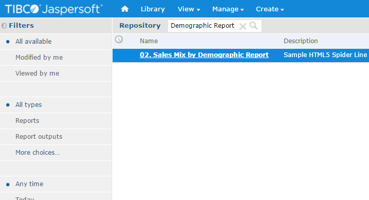
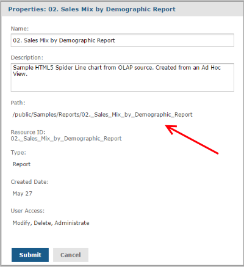

Browse the source code of this page
Search for the Comment LAB_1.1 in the page
You will notice an import of Visualize.js script from JasperReports Server instance
Please note the address may be different from the one below
<!-- LAB_1.1 --> <script src="http://localhost:8090/jasperserver-pro/client/visualize.js"></script>
Now that the script is included we'll add all our javascript code in a dedicated file.
visualize({
auth: {
name: "jasperadmin",
password: "jasperadmin",
organization: "organization_1"
}
}, function (v) {
/*HERE WE'LL ADD OUR VISUALIZE.JS CALLS*/
alert('Visualize.js is ready')
});
In the area above you can see 3 Images as placeholder.
In each Image is written the Id of the container Div.
In this task we'll replace the first Image with a report from JasperReports Server via Visualize.js.
First, open your JasperReports Server (link).
On the top right search box type "Demographic Report" and hit Enter
(hover on blue text to show images)
One Report should be in the results, open it to check it out.
Now Go back to the result search, right click the Report, click Properties...
The Report Path is all we need in order to call this report from Visualize.js
Now let's add the code to render the report in our webpage!
Open the visualizejs_main.js and replace the alert with the code below:
v("#div_chart_1").report({
resource: "/public/Samples/Reports/02._Sales_Mix_by_Demographic_Report",
scrollToTop:false,
scale: "height",
error: function (err) {
alert(err.message);
}
});
Refresh this page to see the chart! Was very easy right?
Now we'll use the other 2 divs above to add 2 charts.
This time only one chart will be rendered when the page loads,
the 3rd chart will be loaded on click of a pie's slice.
First let's add the pie chart, adding an alert onclick of slice.
Add the following code immediately after the chart code added in previous task:
v("#div_chart_2").report({
resource: "/public/Samples/Reports/States",
scrollToTop:false,
scale: "height",
linkOptions: {
events: {
"mouseOut":function (ev, link) {},
"mouseOver":function (ev, link) {},
"select":function (ev, link) {},
"click": function (ev, link) {
if (link.type == "ReportExecution") {
alert('You clicked on State: '+ link.parameters.store_state);
}
}
}
},
error: function (err) {
alert(err.message);
}
});
Last step of this lab is to replace the alert we added previously with a report call.
It's easier than you expect :)
Add the following code replacing the alert added in previous step:
/*...
if (link.type == "ReportExecution") {*/
v("#div_chart_3").report({
resource: "/public/Samples/Reports/Cities",
scrollToTop:false,
scale: "height",
params: {
state: [link.parameters.store_state]
},
});
//console.log(link.parameters.store_state);
/*
}
*/
Refresh the page, anc click on the pie chart, you should see the new chart appearing.In this lab we'll add a report, and then add a javascript function onclick of the images below
in order to pass parameters to this report.
Now you should be familiar with the syntax to add a report. There is only a slight difference here.
Since we'll need to reference to this report from other functions (to pass the parameter value)
we'll put the container div inside the report function. Using this syntax visualize will return us
an object representing the report that we can then use for modifications.
var drinkFoodReport = v.report({
resource: "/public/Samples/Reports/06g.ProfitDetailReport",
scrollToTop:false,
scale: "height",
container:"#div_report_1",
error: function (err) {
alert(err.message);
}
});
The images have specific ID : foodImage, drinkImage.
Let's add the action on the food image:
$("#foodImage").on("click", function() {
var params = {
ProductFamily: ["Food"]
};
drinkFoodReport.params(params).run()
.fail(function(err) {
alert(err.message);
});
});
It should be easy for you to add the same interactivity also for the Drink Image.
Remember, the Image Id is drinkImage
Each Report usually comes with multiple InputControls: for each parameter Jaspersoft should be aware of what kind of selection should be offered to end user.
In this task we'll get the details of Input control for this report and We'll display them as a combo box.
var inputControls = v.inputControls({
resource: "/public/Samples/Reports/06g.ProfitDetailReport",
success: function(data){
var productFamilyInputControl = _.findWhere(data, {
id: "ProductFamily"});
_.each(productFamilyInputControl.state.options, function (option) {
$("#productFamilySelector").append("<option " +
(option.selected ? "selected" : "") +
" value='" + option.value + "'>" +
option.label +
"</option>");
});
}
});
$("#productFamilySelector").on("change", function () {
drinkFoodReport.params({
"ProductFamily": [$(this).val()]
}).run();
});
In this lab we'll add a Dashboard, and then create combobox to let user select from available Dashboards.
The dashboards list is extracted directly from JasperReports Server
Let's see how to embed a dashboard. It's really not much different from a Report...
Check out the code below:
v("#div_dashboard_1").dashboard({
resource: "/public/Samples/Dashboards/4._New_Dashboard",
error: function (err) {
alert(err.message);
}
});
The code below request to JRS the list of resources of type Dashboard in a specific folder.
Please note that onSuccess we call a function that is not yet defined, you'll find it in the next Task.
So before reloading the page complete also next task
v.resourcesSearch({
folderUri:"/public/Samples/Dashboards",
recursive:false,
types:["dashboard"],
success: listRepository,
error: function (err) {
alert(err.message);
}
});
In this Last Task we create a function to analyze the json result retrieved from previous task.
With the result we'll populate the combobox already in this page.
// Repo Lister
function listRepository(results) {
var dSelector = $("#dashboardSelector");
dSelector.empty(); // remove old options
$.each(results, function() {
dSelector.append($("<option></option>")
.attr("value", this.uri).text(this.label));
});
//console.log($("#select"));
dSelector.change(function() {
v.dashboard({
resource: this.value,
container: "#div_dashboard_1",
error: function (err) {
alert(err.message);
}
});
});
// To select the option to display as default via index
$("#dashboardSelector option:eq(5)").prop("selected", true).change();
}
In this section you find some additional Tasks that you can use as exercise.
The level of difficulty is higher so no solution is provided
Use the Documentation and resources in the section EXTERNAL REFERENCE to support your exercise
As soon as you add a dashboard you can see that the screen will jump to top after the dashboard renders.
This is due to the property scrollToTop not being exposed by the dashboard API.
You can fix this easily changing a javascript file in JasperReport Server.
Browse your tomcat folder and open this file:
/apache-tomcat/webapps/jasperserver-pro/scripts/bower_components/bi-report/src/bi/report/view/ReportView.js
Change the line 192 as in the code below:
scrollToTop = typeof this.stateModel.get("scrollToTop") === "undefined" ? false : this.stateModel.get("scrollToTop"),
Add Buttons to handle pagination of Report and other options available via visualize.js as you prefer.
Add A comboBox with available values of export Type from JRS and an Export Button
When a user select the export type and click Export the report should be downloaded in the requested format
Provide the ability to move quickly through reports with direct page anchors.
Also a text box to enter a keyword an perform a search in the report.
Add an event on a dashboard hyperlink, maybe to open another report passing a parameter.
Jaspersoft's open source business intelligence software has more than 14 million product downloads worldwide, 175,000 production deployments and over 14,000 commercial customers in 100 countries. Its BI suite is advanced regularly by a development community of more than 225,000 registered members. The Solutions Consultants Team is dedicated to support prospects in their evaluation of Jaspersoft.

Co-Author of Jaspersoft WebService Datasource and Jaspersoft ETL Plugin

Co-Author of Jaspersoft ETL Plugin and Data Integration specialist

Jaspersoft Evangelist, main panelist in Jaspersoft Weekly Live Demos
Created by Gianluca Natali